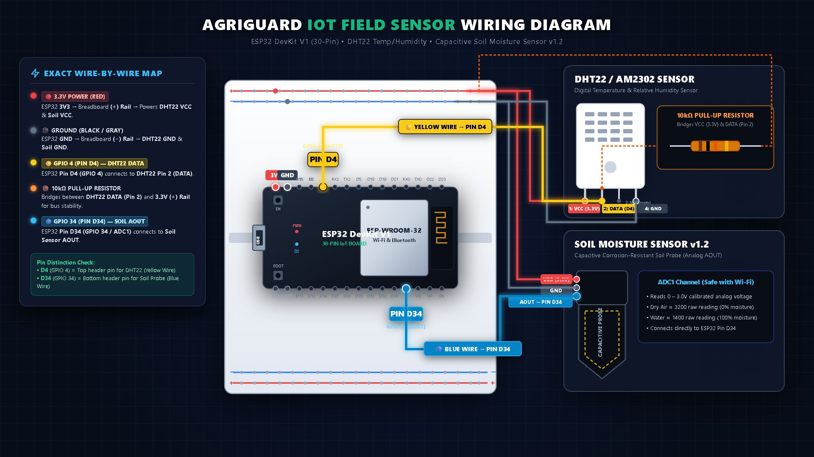

ESP32 DevKit V1 + DHT22 Temp/Humidity + Capacitive Soil Moisture v1.2

| Device & Pin | ESP32 Target Pin | Type | Wire Color |
|---|---|---|---|
| DHT22 Pin 1 (VCC) | 3V3 |
Power (3.3V) | 🔴 Red |
| DHT22 Pin 2 (DATA) | GPIO 4 (D4) |
Digital 1-Wire | 🟡 Yellow |
| DHT22 Pin 3 (NC) | Not Connected | — | None |
| DHT22 Pin 4 (GND) | GND |
Ground | ⚫ Black |
| Soil Sensor VCC | 3V3 |
Power (3.3V) | 🔴 Red |
| Soil Sensor GND | GND |
Ground | ⚫ Black |
| Soil Sensor AOUT | GPIO 34 (D34) |
Analog ADC1 | 🔵 Blue |
1. Never use 5V on ESP32 GPIOs: ESP32 pins are 3.3V logic only. Powering DHT22 or the Soil probe from 5V could damage GPIO 4 or GPIO 34.
2. Wi-Fi ADC conflict: Always use GPIO 34 (ADC1). ADC2 channels (GPIO 0, 2, 4, 12-15, 25-27) shut down when Wi-Fi is transmitting.